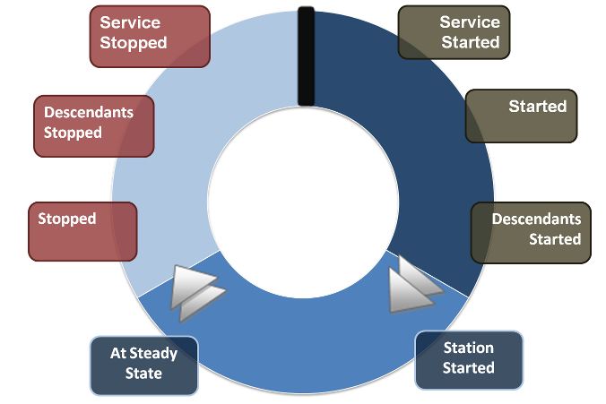

A station is the main unit of server processing in the Niagara architecture:
"file:~stations/{name}/config.bog".config.bog file into a single VM/process on the host machine.The following defines the station boot process:
config.bog database into memory as a BStation and mount it into the ord namespace as "local:|station:".BIService. After this step is complete, each service from the bog file may be resolved using the Sys.getService() and Sys.getServices() methods.Service.serviceStarted() callback. This gives services a chance to initialize themselves after other services have been registered, but before general components get started."local:|station:" is started using BComponent.start(). This call in turn results in the started() and descendentsStarted() callbacks. Once this phase is complete the entire station database is in the running state and all active links continue propagation until the station is shutdown.BStation have been started, each component receives the stationStarted() callback. As a general rule, external communications should wait until this stage so that all components get a chance to initialize themselves.BComponent.atSteadyState() callback. The steady state timer may be configured using the “nre.steadystate” system property. Use Sys.atSteadyState() to check if a station VM has completed its steady state wait period.The following defines the station shutdown process:
BStation stored in memory to the config.bog file. Any changes that were made to the station durring runtime will now be reflected in the config.bog"local:|station:" is stopped using BComponent.stop(). This call in turn results in the stopped() and descendentsStopped() callbacks.BStation have been stopped, each service is stopped using the Service.serviceStopped() callback.